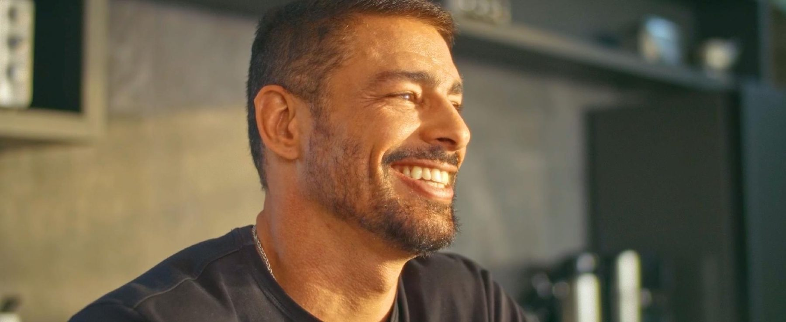
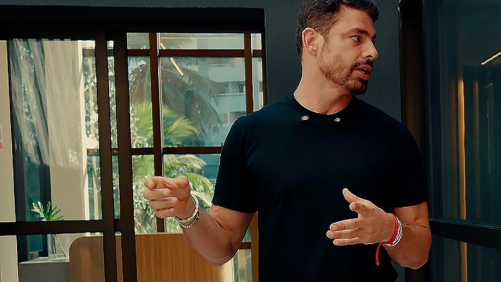

O que faz um empreendimento ser Biosphere?
A assinatura não está apenas no nome. Ela aparece na forma como o projeto responde à vida real de quem vai morar ali.
Reflexões práticas e tendências sobre arquitetura, saúde, tempo e o futuro do morar.

A assinatura não está apenas no nome. Ela aparece na forma como o projeto responde à vida real de quem vai morar ali.

Longos deslocamentos e rotinas pouco eficientes consomem parte dos nossos dias. Morar bem também significa reduzir atritos.

Luz natural, ventilação, sombra e vegetação interferem na forma como percebemos conforto, descanso e bem-estar.

Existe uma diferença entre oferecer equipamentos e incentivar uma vida mais ativa dentro da rotina.

Hoje os empreendimentos precisam acolher diferentes formas de viver — sozinho, em casal, em família, com pets.

A melhor tecnologia nem sempre é a que mais aparece. Em muitos casos, cumpre melhor seu papel quando é simples e silenciosa.
A floresta é sua casa. O mar, sua piscina. Sua liberdade vai no vento.Mais que moradia, seu habitat.

A experiência de morar não termina na portaria. Uma localização pode facilitar ou dificultar toda a rotina.

A curadoria de Marcus Araujo parte de perguntas sobre como as pessoas vivem, trabalham e se relacionam com a tecnologia.

Uma assinatura relevante precisa ir além da exposição de imagem — deve representar visão, participação e coerência.

Fortaleza, Salvador, Luís Eduardo Magalhães, Itapirubá e São Miguel dos Milagres têm contextos completamente diferentes.

Os espaços precisam conversar entre si e responder à rotina das pessoas — não apenas somar itens numa lista de diferenciais.

Uma assinatura Biosphere começa antes da arquitetura. Começa com perguntas sobre quem vai viver ali.